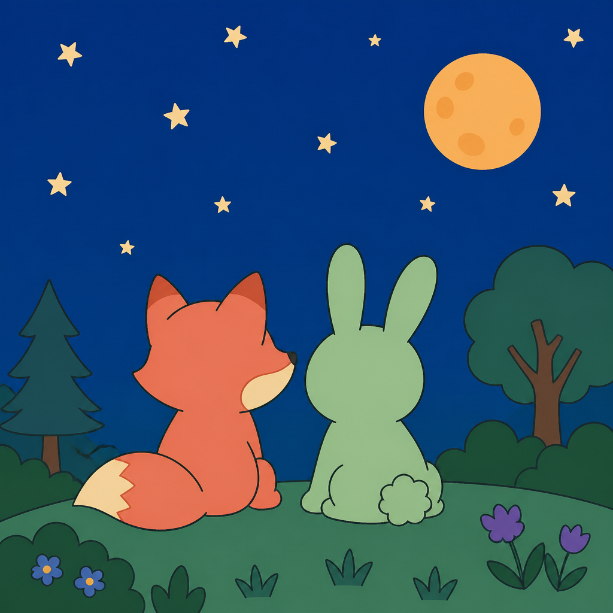
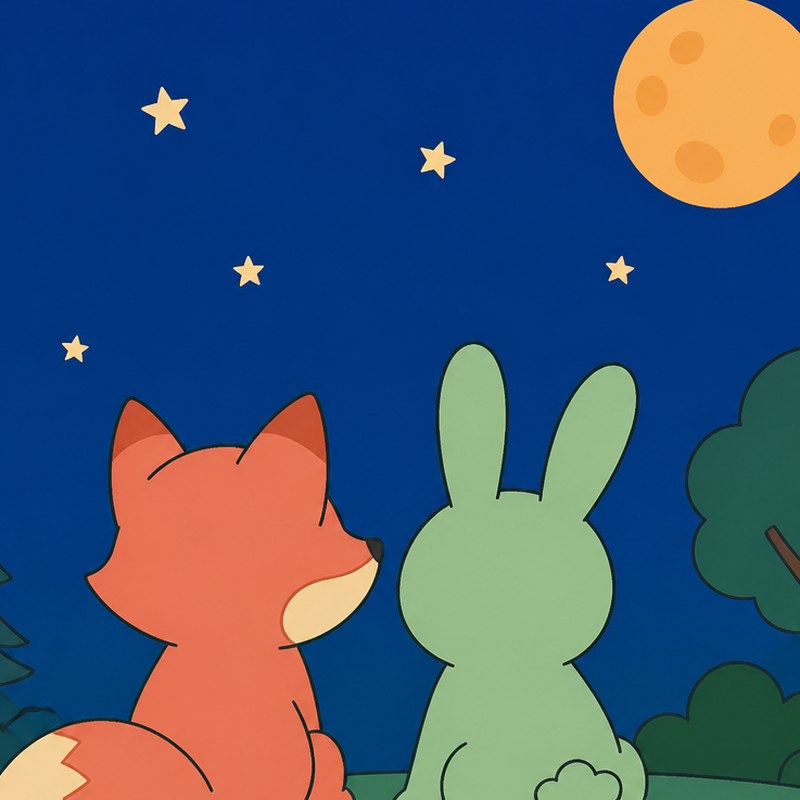

← All films
Bedtime story · 2D pilot · 5:00
Starry Friends
A coral fox and leafy bunny discover that the night sky is friendliest when you share it.
- Runtime
- 5:00
- Format
- 2D series pilot
- Audience
- Ages 3–7
- Year
- 2025
Synopsis
As dusk settles, two friends climb a quiet hill and invent constellations from giggles and wishes. Starry Friends is a gentle bedtime pilot — soft navy skies, sticker-bright stars, and acting kids can mirror while winding down.
Characters
- Coral FoxCurious, scarf-wrapped, asks the big questions.
- Leaf BunnyCalm, pajama-soft, finds wonder in small things.
Character art
Flat shapes, bold outlines, and color built for little screens.

Credits
- Created byPlayhouse Animation
- Story & BoardsPlayhouse Studio
- Character DesignPlayhouse Studio
- MusicPlayhouse Sound
Like this world?
Let’s build the next short, series pilot, or classroom companion together.
Talk with the studio